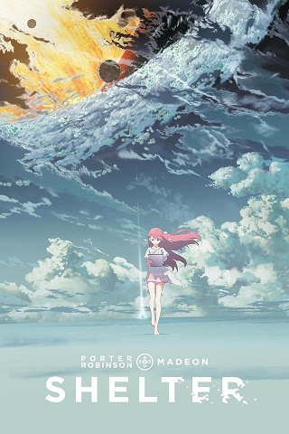
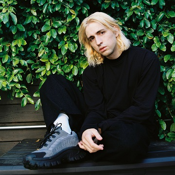

About The Music
Shelter
Shelter adalah sebuah anime pendek yang menceritakan mengenai Rin
(disuarakan oleh Sachika Misawa), gadis 17 tahun yang hidup di dalam
sebuah simulasi futuristik yang dibuat oleh Ayahnya demi
menyelamatkan sang gadis dari hari kiamat. Setiap harinya Rin
terbangun dalam virtual reality dan menggunakan komputer tablet yang
mengendalikan simulasi tempatnya kini hidup dengan membuat dunia
yang baru, berbeda, dan baru setiap harinya. Hingga akhirnya suatu
hari semuanya berubah, dan Rin akhirnya menyadari kenyataan di balik
alasan mengapa ia bisa hidup di dalam simulasi tersebut.
Film ini begitu sepi, rasa kesepian Rin begitu menyentuh meskipun di
awal film ia nampak tidak terganggu. Film ini jarang dialog, hanya
Rin yang bergumam, selebihnya adalah musik. Musik yang ceria dengan
nuansa EDM (electronic dance music) berkebalikan dengan nuansa film.
Film ini tentang rasa sepi. Meskipun hidup nyaman dengan kebutuhan
cukup tapi manusia adalah makhluk sosial, dimana ia sebenarnya perlu
kawan berbagi. Rin mencoba melawan rasa sepinya dengan terua
berjuang mencari alasan untuk hidup. Ia menjadikan memori masa
lalunya sebagai sumber kekuatannya.
notes :
'Shelter / tempat berlindung' bisa berarti banyak hal. Tetapi secara
umum, 'Shelter' adalah tempat nostalgia, perlindungan, dan
pengalaman bertemu dan terbentuk. Di mana kita menyimpan apa yang
penting dan melihat kembali untuk hidup, ketika kita paling
membutuhkannya.
Dan juga, 'silent/silence' bisa merujuk pada kematian. Anak atau
anak-anak akan menjadi satu-satunya sisa orang tua mereka - mereka
akan melanjutkan apa yang telah diberikan orang tua mereka untuk
'Shelter' mereka. Kemudian, mereka akan meninggalkan anak-anak dan
mereka akan mengajari mereka dan mereka akan mati, Menjadi 'Silent'
oleh orang-orang yang memberi mereka kehidupan, kenangan dan
membantu mereka membangun shelter / tempat berlindung mereka. Dan
siklus akan berlanjut.
Profile
Porter Robinson

Porter Robinson adalah Seorang DJ elektro-house dan penulis lagu
synth-pop yang mencetak hit pertamanya dengan "Language" tahun 2012.
Ia lahir di Atlanta, Georgia, pada 15 Juli 1992, dan mulai membuat
lagunya sendiri pada usia 12 tahun. Setelah menandatangani kontrak
dengan label Skrillex, OWSLA, pada tahun 2011, Porter Robinson
memuncak di Nomor 11 di tangga lagu US Top Dance/Electronic Albums
dengan EP debutnya, Spitfire. Satu tahun kemudian, ia ikut menulis
single pemenang Grammy Zedd "Clarity" dan mencetak hit
internasionalnya sendiri dengan "Language," yang terakhir berada di
nomor 9 di Inggris, Nomor 4 di Skotlandia, dan Nomor 33 di Amerika.
Kesuksesan tangga lagunya berlanjut dengan Worlds 2014, yang
menandai debut penuhnya.
Album ini naik ke Nomor 1 di tangga lagu dansa Billboard dan
menelurkan empat single Top 40, termasuk "Sad Machine" bersertifikat
emas. Dia mendapatkan sertifikasi emas lain untuk "Shelter" 2016,
sebuah single non-album yang dibuat bekerja sama dengan DJ Prancis
Madeon. Setelah merilis ep self-titled, techno-influenced dengan
alias "Virtual Self" pada tahun 2017, ia melanjutkan karir solonya
dengan Nurture 2021, smash lain yang memuncaki tangga lagu di
Amerika. 10 dari 14 lagu album memecahkan Top 40 di Album
Dance/Elektronik Top Billboard, dengan "Get Your Wish," "Something
Comforting," dan "Look at the Sky" semuanya memuncak di Nomor 12.
madeon
Madeon yang memiliki nama asli Hugo Pierre Leclercq ini lahir
tanggal 30 Mei 1994. Ia adalah seorang DJ, produser, penulis lagu,
dan pemusik asal Nantes, Prancis. Dia awalnya menarik perhatian
publik melalui video di YouTube-nya yaitu "Pop Culture", di mana dia
menampilkan 30 lagu populer yang berbeda secara real-time
menggunakan Launchpad Novation. EP pertamanya yang berjudul "The
City" dirilis pada tahun 2012, sedangkan album debutnya yang
berjudul "Adventure" dirilis pada tanggal 27 Maret 2015 yang
didukung oleh 22 tur non-stop nya di Amerika Utara.
Leclercq mulai menulis musik pada usia 11 tahun, memproduksi
hands-up dengan nama Deamon dan Wayne Mont sampai tahun 2010 saat ia
mulai memproduksi musik dengan nama yang saat ini dipakai, yaitu
Madeon. Pada tahun 2012, dia diundang untuk bermain dalam empat
music festival yang cukup besar di Amerika, yaitu Ultra Music
Festival (Miami), Coachella (California), Lollapalooza (Chicago),
dan Electric Daisy Carnival (New York). Ditahun yang sama, Leclercq
juga terdaftar di DJ Mag #54. Albumnya yang berjudul "Adventure"
mencapai #43 di Billboard 200 dan #1 di Dance / Electronic Albums.
Pada pertengahan tahun 2015, Madeon memulai tour headlining
pertamanya bernama Adventure Live yang terdiri dari 22 show di
Amerika Utara. Pada tanggal 11 Agustus 2016, ia membuat sebuah lagu
baru yang berjudul "Shelter" bersama teman dekatnya, Porter
Robinson. Dia juga mengumumkan live tour back-to-back barunya yang
dijadwalkan tahun 2016 bernama "Shelter Live Tour". Pada tanggal 16
April 2017, Porter Robinson dengan dirinya bermain di satu set yang
sama di Coachella.
Lyric Songs
Shelter-Porter Robinson x Madeon
[Intro: Amy Millan]
Ayy, I will, ayy
Ayy, I will, ahh, hum huh
Ayy, I will, ayy, it's-
I wonder, I wonder, I wonder, I wonder
Ayy, I will, ayy, it's-
Ayy, I will, ahh, hum huh
Ayy, I will, ayy, it's-
I wonder, I wonder, I wonder, I wonder
[Chorus: Amy Millan]
Ayy, I will, ayy
Ayy, I will, ahh, hum huh
Ayy, I will, ayy, it's-
I wonder, I wonder, I wonder, I wonder
Ayy, I will, ayy, it's-
Ayy, I will, ahh, hum huh
Ayy, I will, ayy, it's-
I wonder, I wonder, I wonder, I wonder
[Verse 1: Madeon]
I could never find the right way to tell you
Have you noticed I've been gone?
'Cause I left behind the home that you made me
But I will carry it along
[Pre-Chorus: Madeon]
Mm, it's a long way forward, so trust in me
I'll give them shelter, like you've done for me
And I know I'm not alone, you'll be watching over us
Until you're gone
[Chorus: Amy Millan]
Ayy, I will, ayy, it's-
Ayy, I will, ahh, hum huh
Ayy, I will, ayy, it's-
I wonder, I wonder, I wonder, I wonder
Ayy, I will, ayy, it's-
Ayy, I will, ahh, hum huh
Ayy, I will, ayy, it's-
I wonder, I wonder, I wonder
Ayy, I will, ayy, it's-
Ayy, I will, ahh, hum huh
Ayy, I will, ayy, it's-
I wonder, I wonder, I wonder, I wonder
Ayy, I will, ayy, it's-
Ayy, I will, ahh, hum huh
Ayy, I will, ayy, it's-
I wonder, I wonder, I wonder, I wonder
[Verse 2: Madeon]
When I'm older, I'll be silent beside you
I know words won't be enough
And they won't need to know our names or our faces
But they will carry on for us
[Pre-Chorus: Madeon]
Mm, it's a long way forward, so trust in me
I'll give them shelter, like you've done for me
And I know I'm not alone, you'll be watching
over us Until you're gone
[Chorus: Amy Millan]
Ayy, I will, ayy, it's-
Ayy, I will, ahh, hum huh
Ayy, I will, ayy, it's-
I wonder, I wonder, I wonder, I wonder
Ayy, I will, ayy, it's-
Ayy, I will, ahh, hum huh
Ayy, I will, ayy, it's-
I wonder, I wonder, I wonder
Ayy, I will, ayy, it's-
Ayy, I will, ahh, hum huh
Ayy, I will, ayy, it's-
I wonder, I wonder, I wonder, I wonder
Ayy, I will, ayy, it's-
Ayy, I will, ahh, hum huh
Ayy, I will, ayy, it's-
I wonder, I wonder, I wonder, I wonder
[Outro: Madeon]
Oh it's a long way forward, trust in me
I'll give them shelter, like you've done for me
And I know I'm not alone, you'll be watching over us Until...
untuk lagu lainnya silahkan klik disini atau klik "list gallery musik" diatas